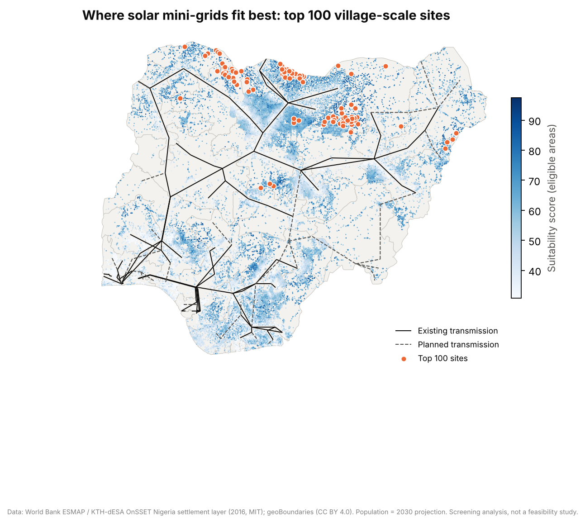
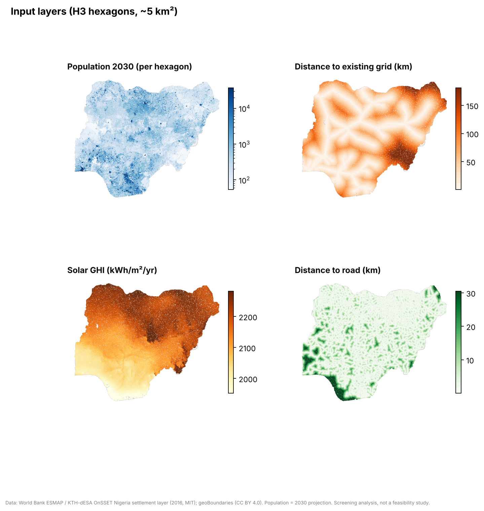
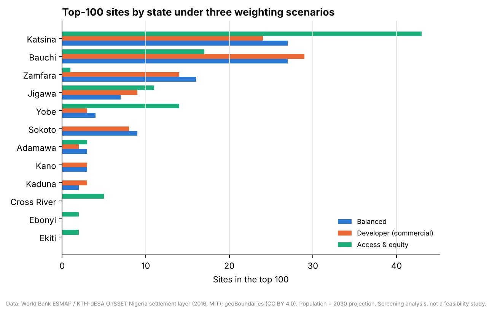
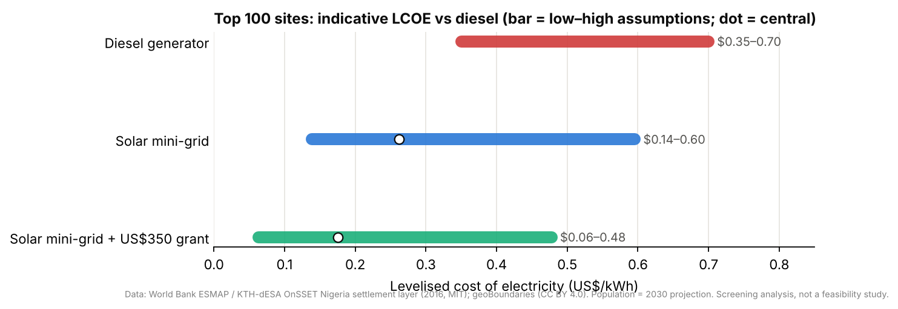
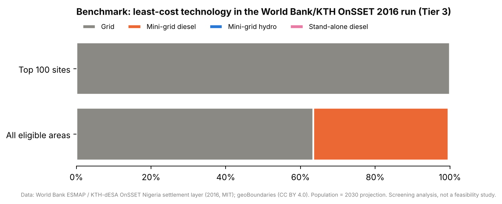

Key results
The headline numbers.
What the analysis shows
Findings, and what they mean for decision-makers.
- 1
The north is the sweet spot
Katsina, Bauchi and Zamfara hold 70% of the top 100: compact villages a median 69 km from the grid, under the strongest sun (~2,240 kWh/m²/yr).
- 2
Solar mini-grids beat diesel at screening level
The central cost of $0.26/kWh (range $0.14–0.60) is about 25–60% below diesel generation, even before grants.
- 3
The ranking is robust
60% of sites stay in the top 100 in at least 80% of 1,000 random weightings. The Balanced and Developer lenses share 85 of 100 sites.
- 4
The 2016 model disagrees, as expected
OnSSET-2016 used 2016 PV costs. Newer modelling (SEforALL IEP 2022) backs mini-grids in dense, remote settlements, and a conservative shortlist is included.
Charts
Click any chart to open it full size.





How it works
Full methodology, tests and code are on GitHub.
- Open national dataWorld Bank/KTH OnSSET 1 km layer (934,595 cells), transmission lines, geoBoundaries
- H3 hexagonsCells aggregated to H3 resolution 7, about the area a village mini-grid serves
- Multi-criteria scoringEligibility screen + 7 criteria, weighted linear combination, three stakeholder lenses
- RobustnessDirichlet Monte Carlo over the weights, plus a de-duplicated shortlist
- EconomicsMTF Tier 3 demand, PV sizing from GHI, capex, LCOE with and without grant, CO₂ avoided
Tech stack
PythonpandasGeoPandasH3pydeckPlotlyStreamlitpytestGitHub ActionsData & references
- World Bank ESMAP & KTH-dESA OnSSET Nigeria layer (MIT)
- geoBoundaries (CC BY 4.0)
- ESMAP (2019) Mini Grids for Half a Billion People
- SEforALL / REA Nigeria Integrated Energy Plan (2022)
- World Bank Multi-Tier Framework · NBS NLSS 2020
- UK DESNZ 2026 diesel factor
Limitations: 2016 settlement, grid and road layers · 2030 population projection · annual GHI only · screening-level economics (no dispatch modelling) · no willingness-to-pay or security data.
More projects
Part of a data, strategy and sustainability portfolio.